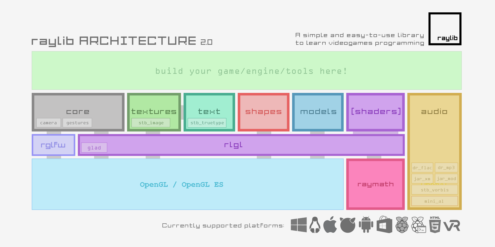

raylib is highly inspired by Borland BGI graphics lib and by XNA framework. Allegro and SDL have also been used as reference.
NOTE for ADVENTURERS: raylib is a programming library to enjoy videogames programming; no fancy interface, no visual helpers, no auto-debugging... just coding in the most pure spartan-programmers way. Are you ready to learn? Jump to code examples!
raylib supported platforms
{kind=link}
raylib supports multiple target platforms, it has been tested in the following platforms but, technically, any platform that supports C language and OpenGL graphics is valid for raylib or can be very easily ported to.
raylib features
- NO external dependencies, all required libraries included with raylib
- Multiple platforms supported: Windows, Linux, MacOS, Android... and many more!
- Written in plain C code (C99) in PascalCase/camelCase notation
- Hardware accelerated with OpenGL (1.1, 2.1, 3.3 or ES 2.0)
- Unique OpenGL abstraction layer (usable as standalone module): [rlgl]
- Powerful fonts module with SpriteFonts support (XNA fonts, AngelCode fonts, TTF)
- Outstanding texture formats support, including compressed formats (DXT, ETC, ASTC)
- Full 3d support for 3d Shapes, Models, Billboards, Heightmaps and more!
- Flexible Materials system, supporting classic maps and PBR maps
- Shaders support, including Model shaders and Postprocessing shaders
- Powerful math module for Vector, Matrix and Quaternion operations: [raymath]
- Audio loading and playing with streaming support (WAV, OGG, MP3, FLAC, XM, MOD)
- VR stereo rendering support with configurable HMD device parameters
- Bindings to Lua (raylib-lua), Go (raylib-go) and more!
- Multiple platforms supported: Windows, Linux, MacOS, Android... and many more!
- Written in plain C code (C99) in PascalCase/camelCase notation
- Hardware accelerated with OpenGL (1.1, 2.1, 3.3 or ES 2.0)
- Unique OpenGL abstraction layer (usable as standalone module): [rlgl]
- Powerful fonts module with SpriteFonts support (XNA fonts, AngelCode fonts, TTF)
- Outstanding texture formats support, including compressed formats (DXT, ETC, ASTC)
- Full 3d support for 3d Shapes, Models, Billboards, Heightmaps and more!
- Flexible Materials system, supporting classic maps and PBR maps
- Shaders support, including Model shaders and Postprocessing shaders
- Powerful math module for Vector, Matrix and Quaternion operations: [raymath]
- Audio loading and playing with streaming support (WAV, OGG, MP3, FLAC, XM, MOD)
- VR stereo rendering support with configurable HMD device parameters
- Bindings to Lua (raylib-lua), Go (raylib-go) and more!

{kind=link}
Wanna see all functions available in raylib? CHECK CHEATSHEET
raylib is open-source and free to use. View license.